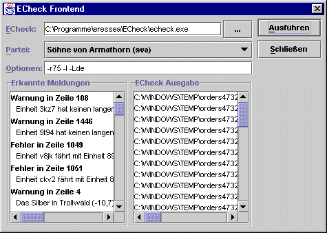

Hier kann man ECheck, den Eressea-Befehlschecker aufrufen. Dieses Dock lässt sich normalerweise mit der Tastenkombination Strg+E erreichen. Magellan bringt eine eigene ECheck-Version mit. Weitere Informationen zu ECheck und möglicherweise auch aktuelleren Versionen findet man wahrscheinlich am besten im Eressea-Wiki. Eine Anleitung findet sich ebenfalls dort.
Bei Klick auf den Menüpunkt erscheint folgender Dialog:

Oben kann man den Pfad zu ECheck angeben. Zusätzliche Optionen können direkt übergeben werden. Die Liste der möglichen Optionen findet man in der Dokumentation zu ECheck.
Mit Klick auf Ausführen werden die Befehle durch ECheck geprüft. Die Fehler und Warnungen, die ECheck ausgibt, werden im linken Fenster aufgelistet. Mit Klick auf einen Fehler bzw. eine Warnung springt das Hauptfenster zu der entsprechenden Einheit und man kann die Befehle nochmals überprüfen.
Sollten dabei merkwürdige Zeichen oder Meldungen wie "Unbekannter Befehl: N?CHSTER" auftreten, liegt das wahrscheinlich an einer inkompatiblen Textkodierung. Diese kann in den Optionen angepasst werden.